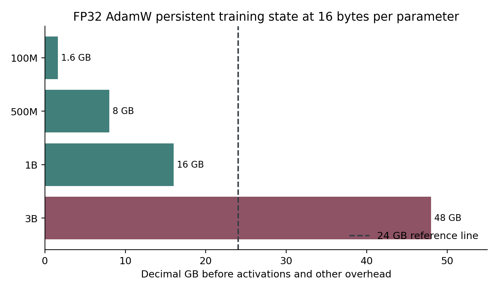

15 The real memory and compute budget
Begin with quantities rather than model names
A billion parameters means a billion stored values in the model, not a billion examples, operations, or tokens. The memory needed for those values depends on their representation. FP32 uses four bytes per value. FP16 and BF16 use two. An idealized eight-bit value uses one, and an idealized four-bit value uses half a byte. Actual quantized formats also require scales, metadata, and sometimes unquantized tensors.
GB and GiB are different units. One GB is one billion bytes. One GiB is 1,073,741,824 bytes. GPU utilities and product descriptions may use labels inconsistently. The safest comparison begins with bytes reported by the actual device and converts using a stated divisor. Throughout worked calculations, GB means decimal bytes and GiB means binary bytes.
For one billion parameters, FP32 weights alone occupy about 4 GB, or 3.73 GiB. BF16 weights alone occupy about 2 GB, or 1.86 GiB. These are storage calculations, not complete training estimates. They omit gradients, optimizer state, activations, working buffers, allocator behavior, and framework overhead.
Full training needs more than weights
A simple FP32 AdamW training budget includes four bytes for each parameter, four for its gradient, and eight for two FP32 optimizer-state values. That is sixteen bytes per trainable parameter before activations and other costs. The table is arithmetic under that exact assumption.
| Trainable parameters | Weights only FP32 | Parameters gradients and Adam states | Same persistent total in GiB |
|---|---|---|---|
| 10 million | 0.04 GB | 0.16 GB | 0.15 GiB |
| 100 million | 0.40 GB | 1.60 GB | 1.49 GiB |
| 500 million | 2.00 GB | 8.00 GB | 7.45 GiB |
| 1 billion | 4.00 GB | 16.00 GB | 14.90 GiB |
| 3 billion | 12.00 GB | 48.00 GB | 44.70 GiB |
This explains why a sub-billion-parameter full-training project can be a reasonable experiment on 24 GB while ordinary three-billion-parameter FP32 AdamW training is not. The one-billion row still has to leave room for everything else. A long context, large batch, large vocabulary logits, or inefficient implementation can exhaust the remaining memory.
Mixed precision is not a single memory formula. One implementation keeps FP32 parameters and optimizer states while autocasting selected operations. Another retains low-precision weights plus FP32 master weights. Gradients and optimizer states may use different dtypes. A commonly cited mixed-precision estimate is eighteen bytes per parameter, but it describes a particular inventory of copies, not a law applying to every PyTorch configuration. Inspect the actual parameter, gradient, and optimizer-state dtypes. F04
An eight-bit optimizer reduces the storage of some optimizer states, but does not automatically quantize the model, activations, or gradients. A four-bit frozen base with trainable adapters is different from full-parameter four-bit training. QLoRA ordinarily updates adapter parameters while the quantized base remains frozen. An inference quantization format is not automatically supported by a training optimizer.

Figure 5 The dashed line is a 24 GB reference, not a feasibility guarantee. Activations, temporary buffers and other overhead are excluded from the bars.
What changes when most parameters are frozen
Let P be the total base parameter count and A the trainable adapter parameter count. A rough adapter budget is base storage proportional to P plus gradient and optimizer state proportional to A, plus activations and temporary tensors. If A is much smaller than P, trainable-state memory can fall dramatically.
Frozen does not mean absent. The forward pass still runs through the base model. Depending on the adapter placement and computation graph, backward may still need intermediate information to calculate adapter gradients. Therefore adapter training can run out of memory from activations even though its optimizer states are small.
A head-only classifier is another case. A frozen backbone produces features; a small trainable head maps them to labels. You may be able to precompute features when the backbone and preprocessing are fixed. Doing so changes the pipeline and data-storage tradeoff. You cannot reuse those cached features after changing the backbone while pretending you are still training end to end.
The largest memory knobs are often ordinary ones
Microbatch size is the number of examples processed together in one forward/backward pass. Increasing it generally increases activation memory. Sequence length affects language models; image resolution affects vision models; waveform length and sample rate affect audio models. These are not cosmetic controls. They define how much work and intermediate state each example creates.
For a 1024 by 1024 image, there are four times as many pixels as in a 512 by 512 image. The actual memory multiplier depends on latent compression and architecture. For attention over flattened spatial tokens, some costs can grow faster than pixel count. For audio, doubling duration doubles the number of samples at fixed sample rate, and attention over those samples or latent frames can add further expense.
Gradient accumulation combines gradients from several microbatches before an optimizer update. With one GPU, microbatch size 2 and accumulation 8 yield an effective batch of 16 examples, assuming every microbatch has two examples. It does not create the exact same execution as processing 16 examples simultaneously in every architecture. Batch-dependent operations and stochastic behavior can differ. It also does not reduce the memory required for a single example that is already too large.
Activation checkpointing discards selected intermediate activations and recomputes them during backward. This exchanges extra computation for lower memory use. It is unrelated to saving a model checkpoint to disk, despite the shared word. Use the implementation documented by the framework, and make the selected checkpointing mode explicit. F05
Efficient attention can reduce attention-specific memory substantially. Its availability depends on model structure, hardware, dtype, and supported masks. A custom mask or unsupported shape may cause a slower fallback. Do not claim the memory behavior of a fused kernel until the actual run uses it.
Measure the full update and the worst example
The first forward pass is insufficient as a memory test. Optimizer states may be created on the first update. Evaluation may use a different batch size. Saving or merging can allocate temporary copies. Generation can create a growing cache. A valid feasibility check includes representative training updates, evaluation, checkpoint save, reload, and the intended export path.
Measure an intentionally long example or the maximum permitted shape, not just an average batch. A dataset with mostly short examples and occasional very long examples can run for an hour before failing. Bucketing by length can improve efficiency, but the maximum still has to be bounded.
PyTorch exposes peak tensor allocation with max_memory_allocated and allocator reservation with max_memory_reserved. Reset peak counters before the measured region and synchronize when measuring GPU elapsed time. These metrics describe the current process's allocator view, so also inspect device-level usage and other processes. F06
torch.cuda.reset_peak_memory_stats()
# Run several complete training updates here.
torch.cuda.synchronize()
print(torch.cuda.max_memory_allocated() / (1024 ** 3))
print(torch.cuda.max_memory_reserved() / (1024 ** 3))Calling empty_cache does not free live tensors that your program still references. Repeatedly invoking it is not a general cure for a model that fundamentally needs too much memory. Find what is retained, reduce a real cost, or change the training method. PyTorch distinguishes live allocation from cached reservation in its CUDA memory documentation. F07
Compute can become the more important limit
Training time depends on measured throughput. If the run processes 2,000 useful tokens per second and you plan to train on 100 million token presentations, raw training time is 50,000 seconds, about 13.9 hours. Add evaluation, checkpointing, startup, data processing, and interruptions. The 2,000-token rate is an example input to the calculation, not a promised speed.
Token presentations count repetitions. A dataset with 10 million tokens trained for three complete epochs presents roughly 30 million tokens, subject to packing, truncation, masking, and sampling. Ten million unique tokens and ten million repeated presentations have different implications for coverage and overfitting.
A rough dense-transformer training-compute heuristic is about 6 times parameter count times training-token count in floating-point operations. It is useful for order-of-magnitude comparisons, not an exact profiler. Attention, vocabulary projection, checkpoint recomputation, architecture, and kernel efficiency alter the real cost. Scaling-law research shows why model size and data allocation must be considered together, but no single historical tokens-per-parameter ratio is a universal prescription for a small specialized model. F08
A three-billion-parameter model trained on a tiny corpus may be badly undertrained even if a clever offload setup makes it run. Conversely, a ten-million-parameter model can be useful for a narrowly constrained task with good representations and representative data. Your job is to find evidence for the smallest adequate system, not to maximize the number printed in its name.
A staged budget for one GPU
Reserve a first phase for correctness. Use dozens of examples, tiny shapes, and a few updates. You should learn whether the program and labels agree, whether gradients exist, and whether saving works. Reserve a second phase for feasibility. Use the intended shapes and a small but representative dataset to measure memory and throughput. Reserve a third phase for quality. Compare a baseline and one trained candidate under a fixed evaluation procedure.
Only after those phases should you fund a longer run. Write an upper limit for training time, disk use, and checkpoint count. Define what result would cause you to stop early. If quality has not improved on the validation task after a justified trial, buying another ten hours of the same configuration is not automatically progress.
For local electricity, multiply average system power in kilowatts by hours and your local price per kilowatt-hour. Do not use the GPU's advertised maximum power as if it were measured whole-system draw. For rented compute, include storage, idle time, transfers, and failed experiments. A plan with no allowance for debugging is not a realistic first-project budget.
Exercises
Calculate persistent FP32 AdamW state for 250 million parameters under the sixteen-byte assumption. The answer is 4 GB, about 3.73 GiB, before activations. Explain why that result alone cannot establish that any 250-million-parameter job fits.
A dataset has 40,000 examples averaging 500 supervised tokens. Two epochs present about 40 million supervised tokens. At a measured 1,250 supervised tokens per second, pure processing time is about 8.9 hours. Explain why a logger counting all input tokens could produce a different throughput number.
Write down three ways to reduce activation memory and three ways to reduce persistent training state. Do not list lowering the learning rate: it is usually a quality and stability control, not a major memory control.